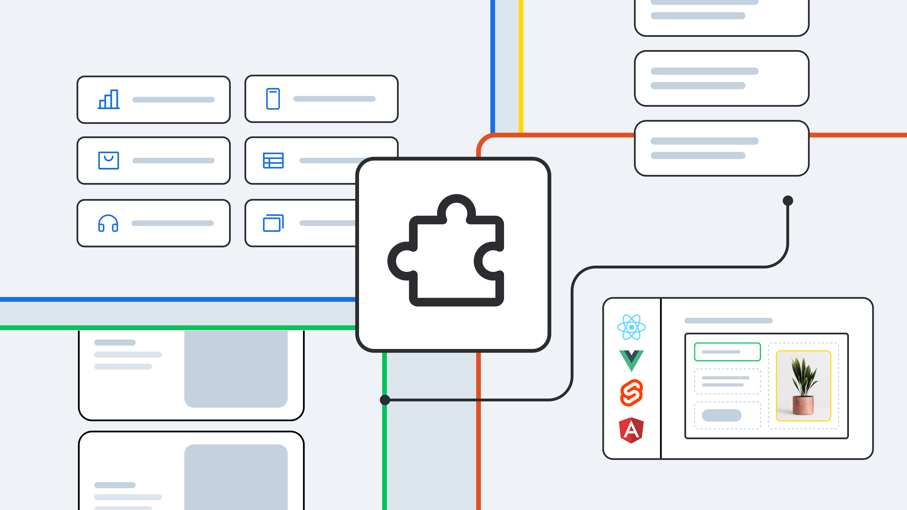

Framework

Concepto
es una estructura predefinida de código que proporciona herramientas, bibliotecas y directrices para facilitar el desarrollo de aplicaciones. Sirve como una base que estandariza y organiza el trabajo del desarrollador, permitiendo construir software de manera más eficiente y estructurada. Los frameworks proporcionan plantillas y funciones reutilizables para tareas comunes, como la gestión de bases de datos, la manipulación del DOM, la autenticación de usuarios, y mucho más, lo que reduce el tiempo y el esfuerzo en el desarrollo de una aplicación desde cero.
- Ahorro de tiempo: Los frameworks proporcionan funciones y componentes reutilizables, lo que acelera el desarrollo.
- Mejores prácticas: Siguen convenciones y patrones de diseño que ayudan a mantener un código limpio y escalable.
- Seguridad: Muchos frameworks incorporan características de seguridad preconfiguradas, como protección contra inyecciones SQL y ataques XSS.
- Comunidad activa: La mayoría de los frameworks tienen grandes comunidades de desarrolladores que contribuyen con mejoras, extensiones y soporte.
- Facilidad de mantenimiento: Al seguir un estándar común, es más fácil para otros desarrolladores entender y mantener el código.
- Curva de aprendizaje: Algunos frameworks tienen una curva de aprendizaje pronunciada, lo que puede dificultar el inicio, especialmente si son muy complejos.
- Restricciones: Los frameworks a veces imponen una estructura rígida, limitando la libertad del desarrollador para personalizar la aplicación.
- Sobrecarga de código: En algunos casos, los frameworks incluyen funcionalidades innecesarias para un proyecto, lo que puede aumentar el tamaño del código y afectar el rendimiento.
- Actualizaciones constantes: Los frameworks a menudo tienen actualizaciones frecuentes, lo que puede obligar a los desarrolladores a hacer ajustes constantes en su código.
Frameworks FrontEnd más utilizados
- React:Creado por Facebook, es una biblioteca popular para construir interfaces de usuario dinámicas. Se destaca por su enfoque en componentes reutilizables y su alta eficiencia al actualizar la vista mediante su Virtual DOM.
- Angular:Desarrollado por Google, es un framework completo para construir aplicaciones web de una sola página (SPA). Ofrece herramientas robustas, como vinculación de datos bidireccional y un enfoque basado en componentes.
- Vue.js:Es un framework progresivo y flexible que es fácil de aprender y usar, ideal para aplicaciones SPA y para integrar en proyectos existentes sin mucho esfuerzo. Ofrece una curva de aprendizaje más baja que Angular y React.
- Svelte:Un framework emergente que difiere en su enfoque porque compila los componentes directamente a JavaScript puro en el momento de la compilación, lo que resulta en un rendimiento mejorado en comparación con otros frameworks que trabajan en tiempo de ejecución.
Framework BackEnd más utilizados
- Express.js: Un framework minimalista y flexible para Node.js que permite crear aplicaciones web y APIs con JavaScript. Es muy popular debido a su sencillez y su integración con otras tecnologías del stack MEAN/MERN.
- django:Un framework para Python que sigue el principio de "baterías incluidas", ofreciendo una solución completa con herramientas integradas para tareas comunes, como la autenticación y la administración de bases de datos. Es conocido por su seguridad y escalabilidad.
- Ruby on Rails:Un framework para Ruby que sigue la filosofía de "convención sobre configuración", lo que significa que sigue muchas convenciones predeterminadas para facilitar el desarrollo. Es ideal para aplicaciones que necesitan desarrollarse rápidamente.
- laravel:Un framework PHP moderno con una sintaxis elegante y herramientas integradas para autenticación, gestión de bases de datos, y pruebas. Laravel es muy popular en el desarrollo web debido a su facilidad de uso y enfoque en tareas comunes.
- Spring Boot: Un framework para Java que simplifica la creación de aplicaciones basadas en Spring. Ofrece configuraciones automáticas y herramientas integradas para desarrollar aplicaciones empresariales robustas.